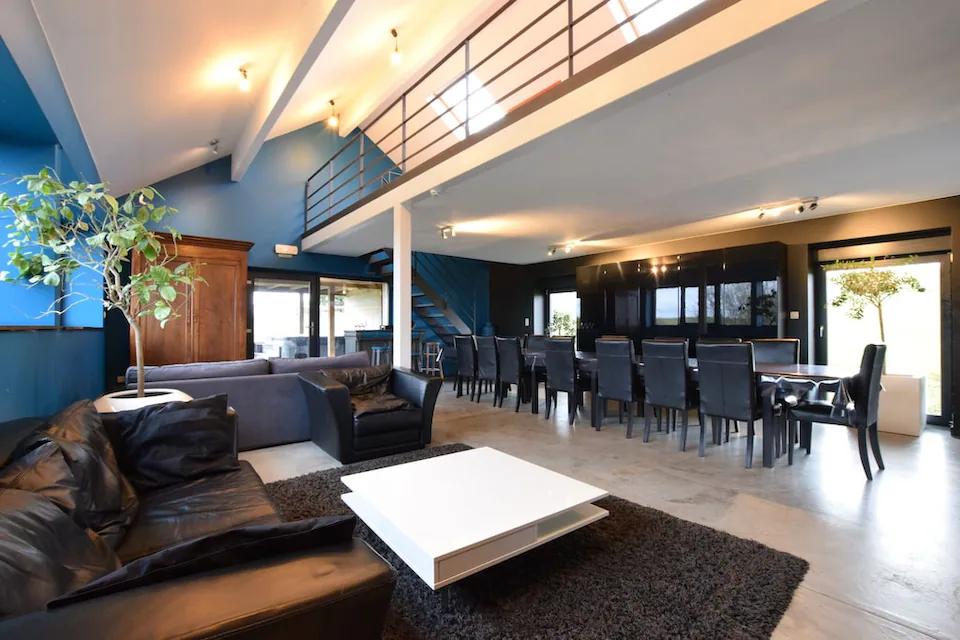

Woezik 3 presenteert
Teamweekend Ardennen Editie
Planning
Programma
Vrijdag rustig landen, zaterdag Ardennenmodus, zondag festival bij de accommodatie.
Heenreis
Route & aankomst
Aankomst is vrijdag vanaf 17:00. Daarna druppelt de rest binnen en kan de eerste avond direct lopen.
Exact adres
Mande-Sainte-Marie 42, 6640 Vaux-sur-Sûre
Dit is het exacte adres van de accommodatie. Gebruik deze route voor navigatie, aankomst en laatste afstemming onderweg.
Bij aankomst
Check-in, kamers verdelen, koelkast vullen en direct doorpakken met de eerste taken.
Omgeving
Mande-Sainte-Marie ligt in Vaux-sur-Sûre, in de Ardennen van Luxemburg. Bastogne, La Roche en Durbuy liggen logisch binnen bereik voor een uitje of tussenstop.
Vrijdagtaken
Groep 1 haalt boodschappen voor vrijdagavond en zaterdagochtend. Groep 2 zet de bosroute uit.
Auto-indeling
Zondag terug: Finn met Brian en Niek, plus Menno met Thom. Maandag terug: Wessel, Steven en Dennis rijden.
Vertrek zondag
De zondagauto's zijn Finn en Menno. Eerste vertrekkers kunnen rond 19:30 uur weg.
Basecamp
Locatie
Mande-Sainte-Marie 42 in Vaux-sur-Sûre, midden in de Ardennen. Genoeg ruimte voor slapen, herstellen, eten, chillen en alles wat later weer een verhaal wordt.
Open in Google Maps
Vaux-sur-Sûre
Groepshuis voor lange avonden en trage ochtenden
Grote leefruimte, veel slaapkamers, wellness en genoeg terrein om overdag uit te waaien en 's avonds weer compleet af te glijden.
8 slaapkamers
Tot 18 gasten
Sauna + bubbelbad



Grote leefruimte die het weekend draagt
Veel zitplek, lange tafel, spelruimte en genoeg volume om niet continu op elkaars lip te zitten.
Tuin, barbecue en genoeg ademruimte
Rond het huis ligt genoeg buitenruimte voor eten, chillen, spelletjes en het betere nutteloze hangen.
Sauna en bubbelbad zijn geen detail
Na activiteiten kun je terugvallen op wellness, warme binnenruimte en een huis dat gemaakt is voor groepen.
Ardennenbasis met dagtrips om de hoek
Bospaden, uitzicht en plaatsen als Bastogne, La Roche en Durbuy liggen allemaal logisch binnen bereik.
AdresMande-Sainte-Marie 42, 6640 Vaux-sur-Sûre, België
RegioVaux-sur-Sûre, Ardennen, Luxemburg, België
Slaapkamers8
CapaciteitTot 18 gasten
WellnessPrivé-sauna en buitenbubbelbad
RouteOpen in Google Maps
BoekingslinkOpen Belvilla
WifiAanwezig
SpelruimteBiljart, tafelvoetbal, darten, spelcomputer en projectiescherm
BuitenTuin, barbecue, tuinmeubilair, speeltoestellen en jeu de boules-baan
HandigWasmachine, droger, afwasmachine, fietsen en fietsenberging
SlaapindelingNog te bepalen
OrganisatieJacco, Chiel en Wessel
SupermarktBoodschappenteam checkt lokaal
HuisregelWie iets sloopt, meldt het voor de groepsapp het doet
Niet vergeten
Paklijst
Vink af op je eigen telefoon. De vinkjes blijven lokaal bewaard.
Draaiboek
Taken
Afvinken wat geregeld is. Met backend actief is dit bord gedeeld voor iedereen.
Voorraadbeheer
Eten & drinken
Maaltijden en geldzaken op een plek.
Budget
Weekendbijdrage en bedrag per persoon volgen zodra accommodatie, activiteit en boodschappen vaststaan.
Tikkie
Link volgt. Betaalstatus houden we voorlopig buiten de site.
Supermarkt
Boodschappen
Gedeelde lijst voor toevoegen, afvinken en wegstrepen tijdens het weekend.
Huisvrede
Regels
Genoeg structuur om de borg terug te krijgen. Niet zoveel dat het op werk lijkt.
Maandag
Check-out
Uitchecken en nog één laatste ronde doen op vergeten spullen en een kleine schoonmaak.
Maandag 11:00 check-out
Zorg dat iedereen op tijd klaar is om in te laden en richting huis te gaan.
Vergeten spullen en kleine schoonmaak
Loop kamers, badkamers, opladers, koelkast en gemeenschappelijke ruimtes nog één keer rustig langs.
Waar is iedereen?
Status
Geen GPS, gewoon een snelle weekendstatus. Vooral handig als iemand ineens nergens staat.
Recent
Laatste wijzigingen
Organisatie
Admin
Simpel paneel voor snelle weekendupdates. Geen echte beveiliging, wel handig voor het huisje.
Quotes
Beheren
Praktisch
Weekendinfo
Alles wat normaal ergens in twintig appjes verdwijnt.
Jacco, Chiel en Wessel
Programma, planning, taken en de algemene poging om het weekend net genoeg structuur te geven.
Vijf chauffeurs, verdeeld over zondag en maandag
Zondag rijden Finn en Menno terug. Wessel, Steven en Dennis blijven tot maandag met hun auto.
Vijf man vertrekt zondag
Finn, Brian, Niek, Menno en Thom gaan zondag terug. Het officiële programma eindigt om 19:00 uur.
Slaapindeling, wifi en accommodatie-info
Slaapindeling en wifi volgen nog. Programmalijn voor zaterdag en zondag staat wel vast.
Vaux-sur-Sûre met sauna en bubbelbad
Mande-Sainte-Marie 42, 6640 Vaux-sur-Sûre. Acht slaapkamers, ruimte voor een grote groep, een recreatieruimte en genoeg buitenruimte om er een volledig teamweekend van te maken.
Vervoer
Auto's
Wie rijdt, wie zit waar en wat moet nog verdeeld worden.
Quote wall
Quotes
Leg de zinnen vast die later door iedereen ontkend worden.
Vrijdag donker
Dodenstraal
Van punt A naar punt B zonder geraakt te worden door de zaklampen van de wachters.
Zondag
Huisfestival
Muziek, spellen en DJ-slots bij de accommodatie.
Zaterdag
Buitenactiviteiten
Outdoor Dag via Ardennen.nl. Voor jullie groep staan mountainbiken en kanoen op het programma.
Alles bij elkaar
Meer
Eerst wat je direct nodig hebt, daarna organisatie, planning en de rest van het weekendspul.
Snel nodig
Noodinfo
Voor als iemand kwijt is, de auto niet start of de groepsapp geen oplossing is.
LocatieMande-Sainte-Marie 42, 6640 Vaux-sur-Sûre, België
Noodnummer112
Bel Wessel06 8304 1562
OrganisatieJacco, Chiel en Wessel
ChauffeursFinn, Menno, Wessel, Steven en Dennis
Zondagauto'sFinn + Brian + Niek / Menno + Thom
Zondag naar huisFinn, Brian, Niek, Menno en Thom
RouteOpen in Google Maps
BoekingslinkOpen Belvilla
Taxi / huisartsenpostVullen zodra lokaal gecheckt